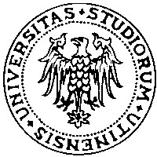
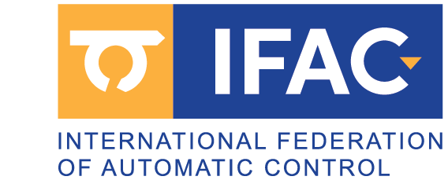

PhD in Systems Engineering - Research on optimal control and lap-time simulation for racing applications.
Curriculum Vitae
Key qualifications
4+ years experience - Motion planning, optimal control, and vehicle and autonomous agent dynamics.
Vehicle dynamics - Custom multi-body models and controls for OEMs and motorsport.
Programming proficiency - Extensive use of C++, MATLAB and Python for algorithm and tool development.
Software engineering - Experienced with Git and cross-platform development workflows.
International collaboration - Experience in European, national, and OEM-funded projects.
Working experience
PhD Researcher - Doctoral program in Mechatronics and Systems Engineering
University of Trento, IT
Motion planning algorithms for autonomous driving, multiagent cooperation and racing scenarios. Multiplatform real-time control library. MLT simulator for MotoGP with indirect optimal control methods.

Visiting Researcher - Autonomous Vehicle Systems Laboratory
Technische Universität München (TUM), DE
Velocity profile online optimization for the Indy Autonomous Challenge (IAC) and Abu Dhabi Autonomous Racing League (A2RL). Time-optimal velocity planning and control under dynamic grip constraints.
Research Fellowship (Research grant decree n. 205/2020)
University of Trento, IT - Solution algorithms comparison for minimum-time optimal control problems for racing vehicles.
Research Scholarship (Decree n. 74/2020)
University of Trento, IT - Minimum Time Manoeuvres of complex vehicle models described with DAEs.
Projects
See the full list, including personal open-source work, on the Projects page.

VeDi 2025 - Ministero Italiano dello Sviluppo Economico
CRF - Stellantis | University of Trento
Development of a motion planner for maneuver negotiation between AVs via V2X communication.
SUNRISE (Safety assUraNce fRamework for connected, automated mobIlity SystEms)
Horizon Europe project | University of Trento
Safety Assurance Framework for CCAM.
FBGA - Forward-Backward method for time-optimal velocity planning under generic acceleration constraints (DRIVEWISE/FBGA)
TUM IAC and A2RL racing team | University of Trento
Fast real-time velocity profile optimization tool under generic complex gggv constraints.
Minimum Lap Time Simulator
Aprilia Racing | University of Trento
Optimal Control offline MLT simulator and performance analysis.
Education
PhD Candidate - Doctoral program in Materials, Mechatronics and Systems Engineering
University of Trento
Professional qualification to practice as an engineer - Industrial Engineer
University of Trento
Master of Science in Mechatronics Engineering
University of Trento

Bachelor of Science in Mechanical Engineering
University of Udine
Teaching experience
Teaching assistant
University of Trento - Mechatronics Systems Simulation, Sistemi Meccanici e Modelli, Fondamenti di Meccanica (Prof. F. Biral, Prof. E. Bertolazzi, Prof. M. Da Lio).
Tutor, mechanics and mechatronics; video-lectures
University of Trento - Frontal lecturer and video lecture (DII YouTube channel).
Awards
Reply Code Challenge - Standard Edition 2025
Issued by Reply - 39th place among approximately 3,600 teams.

IFAC Young Author Award
IFAC CTS 2024, Ayia Napa, Cyprus - for "MPTree: A Sampling-based Vehicle Motion Planner for Real-time Obstacle Avoidance"
Best Poster Award
Department of Industrial Engineering (DII), University of Trento - first place for "MPTree: Motion primitive tree exploration for trajectory planning with dynamic and cooperative obstacle avoidance"
Software and programming skills
C/C++ | MATLAB | Python | Git | CMake/Make | Maple
Publications
See the full, up-to-date list on the Publications page.
Languages
| Listening | Reading | Spoken interaction | Spoken production | Writing | |
|---|---|---|---|---|---|
| Italian (mother tongue) | C2 | C2 | C2 | C2 | C2 |
| English | C1 | C1 | C1 | C1 | C1 |
| German | A1 | A2 | A1 | A1 | A1 |